ABOUT ME
 Barcelona, Spain


Hello! I'm Alicia, 23-years old girl from Barcelona. Mathematician and Generative AI engenieer, loves #tech, #productivity, #personal growth and always looking for expanding my skill set in absolutly any area. Obssessed with planning and thinking about what is next. And trying to make daily consious decisions to improve 1% each day.
I created this website not to focus on myself, but to share the most inspiring messages I’ve learned throughout my journey, from books I’ve read and people I’ve listened to. My goal is to create a space that reflects a bit of who I am and what I love. No AI—just pure motivation and passion. It's a place for reflection, with the hope of inspiring others.
Feel free to reach out if you'd like to collaborate or you simply share the same interests!